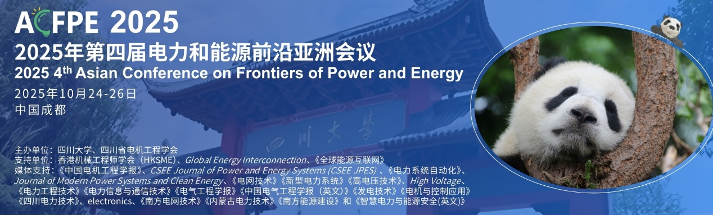

学院通知 · 科研创新
2025年第四届电力和能源前沿亚洲会议(ACFPE 2025)
发布时间：2025-04-29
2025年第四届电力和能源前沿亚洲会议(ACFPE 2025) 2025 4th Asian Conference on Frontiers of Power and Energy (ACFPE 2025) 【2025/10/24-26】中国成都 https://acfpe.org/ 【会议简介】 2025年第四届电力和能源前沿亚洲会议(ACFPE 2025) 将于2025年10月24日至26日在中国成都举行，会议由四川大学和四川省电机工程学会联合主办，IEEE 成都分会技术协办，香港机械工程师学会（HKSME）和《全球能源互联网》提供支持，《中国电机工程学报》、CSEE Journal of Power and Energy Systems (CSEE JPES) 、《电力系统自动化》、Journal of Modern Power Systems and Clean Energy、《电网技术》《新型电力系统》《高电压技术》、High Voltage、《电力工程技术》《电力信息与通信技术》《电气工程学报》《中国电气工程学报（英文）》《发电技术》《电机与控制应用》《四川电力技术》、electronics、《南方电网技术》《内蒙古电力技术》《南方能源建设》、AR电气和《智慧电力与能源安全(英文)》提供媒体支持。会议主题“人工智能赋能未来智能电网技术创新”。 会议诚邀能源与电力领域的专家、研究人员和学者参与会议、共同探讨、分享智慧，讨论能源转型实施路径和绿色发展创新思路，研讨新型电力系统发展举措，促进电力和能源的可持续发展。 荣誉主席 总主席 刘俊勇 四川大学 刘友波 四川大学 会议征文信息 l 专题征稿： 专题 1 ：面向可再生能源的电工装备先进状态感知技术 主席：李劲松，大连理工大学，中国 副主席：洪剑锋，北京交通大学，中国 专题 2 ：面向碳中和的电力系统运行与规划先进技术 主席：郭中杰，电子科技大学，中国 副主席：罗仕华，电子科技大学，中国 l 论文收录： 1、 在符合 IEEE Xplore 的范围和质量要求的情况下，所有接收且做报告的论文将被提交到 IEEE Xplore 审核。出版后由出版社提交 Engineering Village, Scopus, Web of Science 等机构审核和检索。 2、优秀且经拓展后的文章可推荐出版至期刊。 ACFPE 2025 已被EI Compendex 成功检索！ ACFPE 2024/2023/2022 已被EI Compendex 成功检索 ！ l 会议征稿： 征稿主题包含但不限于： * 人工智能在电力系统中的应用 * 能源分析、建模和预测 * 能源转换和节约 * 能源规划和经济上的能源 * 综合能源系统 * 新能源系统和控制技术 * 电力市场和数据分析 * 电力系统分析、运行和控制 * 新能源汽车的动力系统和控制系统 详情请查询官网信息：https://acfpe.org/CFP.html 论文提交： 投稿地址： Submission System 文章模板： Full Paper Template (Microsoft Word) | Full Paper Template (LaTex) 文章模板： 重要日期： 投稿截止日期： 202 5年9月20日 会议日程： 此日程仅供参考，以最终公布日程为准 202 5年10月24日 - 会议签到/资料领取/工业参观 202 5年10月25日 - 开幕式/专家报告/专题论坛 202 5年10月26日 – 技术论坛/学术考察（待定） 征集报告者及听众 1. 报告者 ：只参加会议作报告，不出版论文，只需要将摘要提交给会务组，经过评审后，将告知结果。注册成功的报告，将列入会议日程。有意者将摘要发送到会议邮箱acfpe @vip.163.com 2. 听众 ：诚挚邀请对电力、能源领域感兴趣的研究员及专家学者参与此次会议，您可以注册为听众，注册成功后可以参加此次会议的所有议程。 联系方式 刘老师 ( 会议秘书 ) 电话 : 19150956004 （微信同号） 邮件 : acfpe@vip.163.com 官网 : https://www.acfpe.org/
